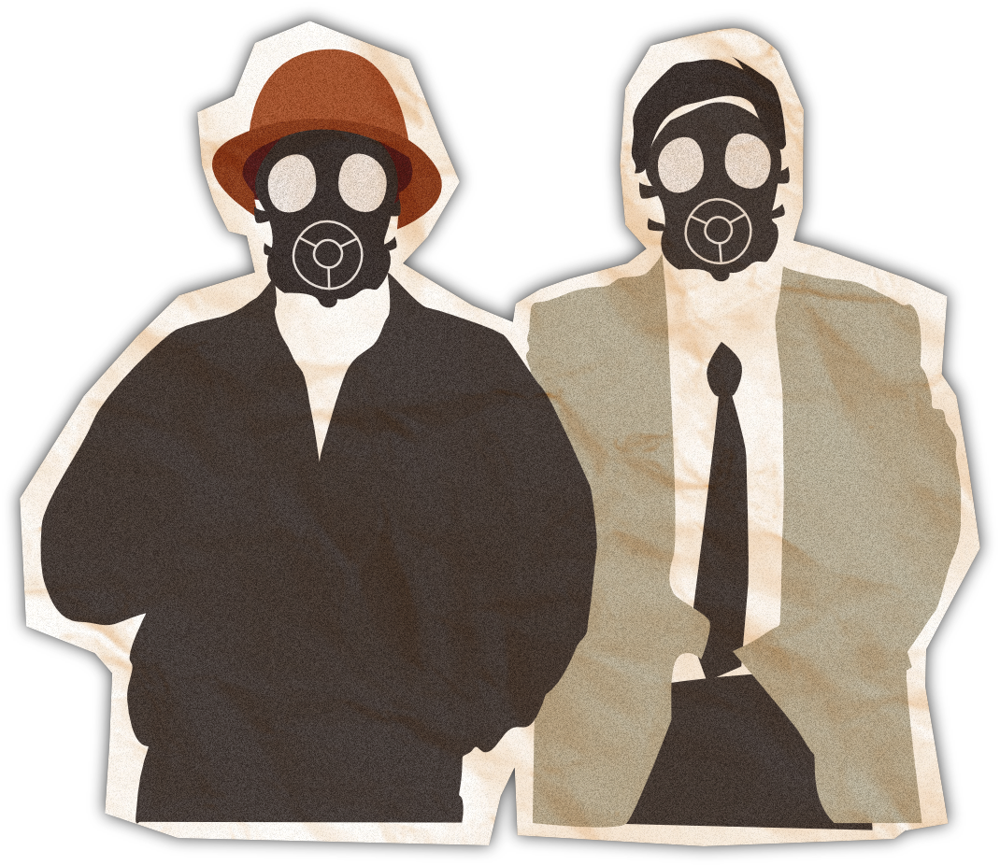
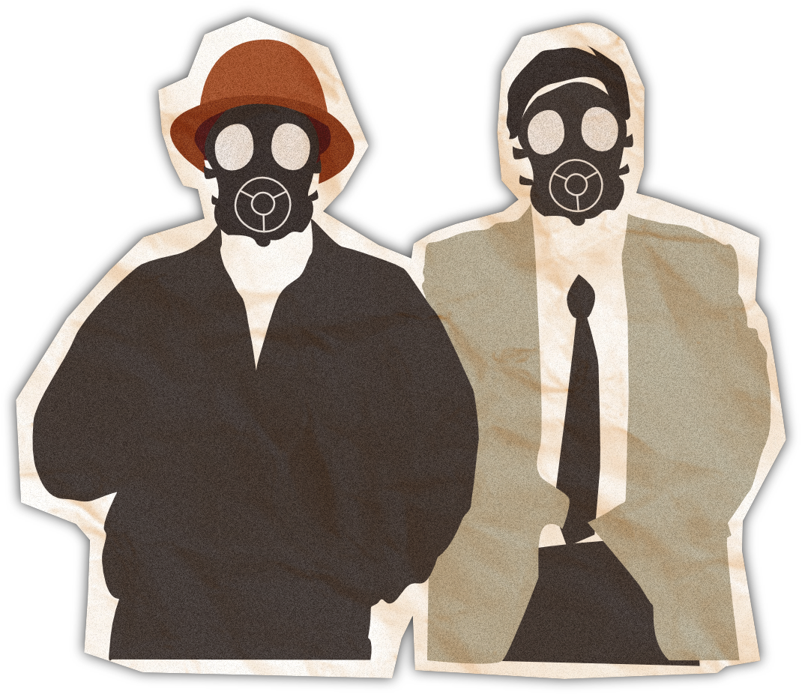

Hay más de mil sitios plagados de residuos mineros abandonados en el territorio boliviano.La remediación es una cuenta pendiente, por vacíos legales y normativas ambiguas que dejó el Estado y favorecen a los extractivistas. El saldo son pobladores intoxicados con metales pesados y ríos muertos en 326 comunidades que viven en el área de influencia de estos pasivos ambientales.
Por: Daniel Rivera Matirayo
Elva Arando tiene 47 años y creció frente a una montaña de 4,3 millones de toneladas de residuos mineros abandonados, también llamado pasivo ambiental. Es el depósito San Miguel de Cantumarca, en Potosí, uno de los 1.188 inventariados por el Estado en Bolivia. Aquí, en medio de la ciudad, el cierre perimetral de estos tóxicos consiste en unos postes de madera de metro y medio de altura, como si se tratase del lindero de una chacra. Pero en realidad el lugar contiene cargas sulfurosas y óxidos con contenidos de cuarzo, pirita, esfalerita, galena, calcopirita y también plata, plomo, estaño y zinc. Todos, nocivos para la salud y el medio ambiente.
Mientras esta mujer camina, sus zapatos café pisan un material aceitoso marrón y amarillo que se ha acumulado al costado de la Ruta Nacional 5. Es el contaminante que dejó en 1985 la Corporación Minera de Bolivia (Comibol) por la explotación de estaño durante 45 años, que se escurre por la carretera que une la ciudad imperial con el majestuoso Salar de Uyuni.
El dique San Miguel contiene cargas sulfurosas y óxidos con contenidos de cuarzo, pirita, esfalerita, galena, calcopirita y también plata, plomo, estaño y zinc.
Elva dice que sus abuelos y la gente de esa época permitieron instalar ese depósito ante la necesidad de dos piletas públicas de agua, sin pensar que con los años este y otros pasivos mineros de la zona se convertirían en los verdugos de sus hijos y nietos. Incluyéndola a ella, que ahora tiene plomo en su sangre en niveles que la Organización Mundial de la Salud (OMS) advierte que afecta al ser humano.
Alrededor del millar de pasivos ambientales que envenenan la tierra en Bolivia viven 326 comunidades, detectadas mediante análisis de información geográfica para esta investigación de ACCESO y CONNECTAS, en alianza con El País y Erbol. Los estudios sobre la afectación a los humanos en estos sitios son escasos, porque el Estado tampoco invierte en ello. Pero en los lugares donde sí lograron hacerse pruebas de laboratorio bajo esfuerzo de los vecinos y organizaciones no gubernamentales, el 50 % de los estudiados, en promedio, están afectados por metales pesados en su organismo.
San Miguel no es el único problema de Cantumarca. A unos dos kilómetros hacia el oeste, Laguna Pampa I y Laguna Pampa II forman parte de otros 1.000 pasivos ambientales aún no inventariados, según estimaciones del Servicio Geológico Minero. Ambos son depósitos de residuos mineros en los que el Gobierno prorrogó su cierre y mitigación. Hay caseríos alrededor que no cambian su imagen apocalíptica: es un desierto de tierra plomiza con cúmulos de agua, verdosa o marrón, dispersa por todos lados; tuberías en desuso botadas a un costado; volquetas que entran y salen del lugar; y un viento de abril que levanta partículas de polvo contaminadas y las esparce por el vecindario.
Al fondo emerge el dique de colas secas de Laguna Pampa I y II, donde el viento levanta partículas de polvo de plomo, cadmio, arsénico, cianuro, entre otros tóxicos.
Diez minutos son suficientes para salir con los ojos rojos y un escozor en la garganta, como si se hubiese tragado gas pimienta que usa la policía en una represión. Aquí no se requiere contraseña para entrar al inframundo; se nace y se vive en él.
En Bolivia, un país minero, se permite a los industriales exprimir la tierra y dejar una herencia tóxica. En los últimos 22 años, entre el Ejecutivo nacional, gobernaciones y alcaldías recibieron más de 4.349 millones de dólares por regalías e impuestos a la minería, mientras que los operadores produjeron minerales valuados en más de 30 mil millones de dólares. Además, esta actividad permaneció entre los tres primeros rubros de exportación con mayor valor económico.
A cambio, el Estado mediante la Corporación Minera de Bolivia (Comibol) sólo mitigó 13 pasivos ambientales con inversión de la cooperación internacional, entre los años 2002 y 2011. Mientras los ministerios de Minería y el de Medio Ambiente permitieron vacíos legales al no generar una normativa específica para la restauración de todos los depósitos de tóxicos, situación que beneficia a los extractivistas.
Ríos, lagos, lagunas y quebradas, junto a su biodiversidad, también son víctimas de la tierra envenenada que deja la minería. Cerca de 400 fuentes hídricas —detectadas para esta investigación— están dentro del área de influencia (1 kilómetro) de los pasivos ambientales. En una treintena de ellas está demostrada su afectación por estudios científicos, donde es imposible la vida de la flora y fauna. Son prácticamente ríos muertos.
Mapa interactivo de comunidades afectadas por pasivos ambientales
La salud afectada
Tiene dos años de edad y por sus venas corren 14,2 miligramos de plomo por cada decilitro de sangre (ug/dl); es la paciente afectada más joven de Cantumarca. La mina le ha marcado para el resto de su vida. Lo más probable es que su cerebro se vea afectado y desarrolle una discapacidad intelectual, porque la OMS advierte que esos son los efectos que puede tener un infante si tiene más de 3,5 miligramos de este tóxico en su cuerpo. Aunque también aclara que no existe ningún nivel de plomo en el organismo que se considere exento de riesgo.
Vicente Arando, un tipo de tez colorada y un bastón de cacique, sabe bien que en Cantumarca la desgracia está en los pasivos ambientales mineros, porque de 116 personas sometidas a pruebas de laboratorio en el año 2023, el 80 % tenía niveles de plomo en su sangre (unos con mayor grado que otros).

Vicente Arando, cacique de Cantumarca. De fondo, residuos mineros secos depositados en el dique Laguna Pampa I y II.
Esos test no los fueron a realizar el Ministerio de Salud, el Servicio Departamental de Salud ni alguna institución de medio ambiente; los mismos pobladores recaudaron dinero y gestionaron ayuda del laboratorio privado Niño Jesús, porque el Estado siempre estuvo ausente. Las entidades públicas más bien les cuestionaron el por qué se hicieron estos estudios y pedían explicación de quién les dio la autorización, recuerda Elva Arando aquel episodio ocurrido en Potosí; ella es parte del Comité de Medio Ambiente de esa comunidad.
Jael Aquilar, una bioquímica que antes había procesado muestras de sangre para el personal de empresas mineras, fue quien lideró el trabajo con los pobladores afectados. Precisó que el estudio se hizo a hombres, mujeres y niños. “Son personas que no trabajan mina adentro, lo único que han hecho es vivir en Cantumarca (donde están los depósitos de residuos mineros). En los niños, el 90% tiene niveles de dosificación detectable de plomo en sangre”, detalló.
Los vecinos de Cantumarca luchan desde hace una década para lograr el cierre del depósito. Según licencia ambiental, entre 2013 y 2017 la Asociación de Ingenios Mineros de Potosí debía concluir ese proceso, pero continuaron con el vertido de residuos. Como el Gobierno nacional y el departamental no hacen cumplir sus propias resoluciones y leyes para proteger la vida y el medio ambiente, en 2023 los afectados acudieron al Tribunal Constitucional Plurinacional (TCP).
La Justicia determinó que ya no se depositen más residuos en esos diques, hacer el cierre del sitio y el resarcimiento a la tierra. La fecha límite de cumplimiento es el 29 de junio de 2024, pero el Ministerio de Medio Ambiente desafió a ese poder del Estado ampliando el permiso por un mes más.
Para la Asociación acusada, la demora está en la denominada fase de estrangulamiento, entre otros aspectos técnicos, y argumentan que para concluir el cierre de Laguna Pampa I necesitan cuatro años, mientras que Laguna Pampa II requiere cinco años y medio. Pero para la Justicia está demostrado el incumplimiento de este operador, además de haber provocado un impacto negativo al medio ambiente y la salud. Por lo que el TCP ordenó no depositar más desechos en ese lugar, hacer el cierre del sitio y el resarcimiento a la tierra. El plazo de cumplimiento venció el 29 de junio del 2024. Pero los pobladores temen que no se cumpla el fallo judicial y sigan expuestos a la tierra envenenada.
Rabia e Impotencia es lo que siente Cristina Monzón, una mujer morena de hablar pausado que reparte su tiempo entre su familia, su trabajo y el voluntariado como catequista de una iglesia de Potosí. Ella también tiene plomo en su sangre y lucha desde hace años contra el cáncer y —junto a Elva Arando— contra las mineras y el Gobierno para que se cierre ese depósito de tóxicos que sólo ha traído desgracias para la gente.
“Del estudio que se ha hecho a consecuencia del plomo en la sangre hemos ido consultando a médicos, también ahora Google te da la oportunidad de ver. Entonces es alarmante las consecuencias de los metales pesados y, ante todo, del plomo. A la larga puede dejar muchas secuelas y creo que a veces es mejor no enterarse - dice Cristina -. En mi caso hubiera querido no enterarme porque afecta duro”.
Audio: Cristina Monzón, miembro del Comité de Medio Ambiente, relata su lucha contra los operadores mineros.
La misma OMS recomienda a sus Estados miembros, entre ellos Bolivia, que cuando se detecta una concentración superior a los 5 ug/dl de este metal en sangre, se debe identificar la fuente de exposición para reducir y acabar con ella. En Cantumarca, por ejemplo, una mujer de la tercera edad tiene 21.7 ug/dl en su cuerpo. Eddy Salguero, director del Servicio Departamental de Salud (Sedes), no contestó las llamadas telefónicas realizadas para consultarle sobre la atención a los afectados, quienes aseguran que aún no recibieron ningún tipo de tratamiento ni revisión médica.
Las víctimas están por todos lados. A 311 kilómetros de este lugar, en Oruro, el doctor Jacquez Gardon acompañó una investigación publicada en 2009 sobre la afectación de metales pesados en humanos. Por la zona del ex campamento minero San José, que ahora es un barrio, detectaron que el principal medio de contaminación era la acción mecánica del viento, que transportaba partículas de polvo y tierra con contenidos metálicos de plomo, arsénico y cadmio. De 199 niños a los que se les tomó muestras de cabello, el 25% presentó niveles de plomo por encima de lo que establece la OMS, además de tener afectación al nervio óptico y disminución del aprendizaje.
“Hemos demostrado que los niños que viven cerca de lugares de exposición a minerales están afectados, los de otros lugares no -puntualizó el médico-. Pero no sabíamos cuándo empieza la exposición. Por eso hemos estudiado a 500 mujeres embarazadas y sus hijos. El resultado también fue que las gestantes que están cerca de los contaminantes, como pasivos ambientales o actividad minera, estaban afectadas por metales en su cuerpo y también sus niños al nacer, mientras que las embarazadas de otras zonas, no”.

Uno de los pasivos ambientales mineros ubicado en la zona San José de Oruro.
En este sector, que también está dentro de la ciudad de Oruro, hay seis depósitos de desechos mineros, uno de ellos enfrente de una escuela y de un mercado barrial. La urbanización creció alrededor de estos sitios tóxicos. Y aunque un informe del Ministerio de Minería y Metalurgia (2023) indica que este es uno de los pasivos ambientales remediados en Bolivia, la huella minera marca de color óxido las orillas del camino asfaltado; son residuos que se escurren ayudados por la lluvia.
Estos son dos casos concretos en los que se demostró científicamente una afectación a la salud, donde los residuos mineros son la principal fuente contaminante. Pero para esta investigación periodística —mediante cruce de información geográfica y datos de GeoBolivia— se contabilizaron 87 mil personas que viven en 326 comunidades ubicadas dentro del radio de un kilómetro en los 1.188 pasivos ambientales mineros inventariados por el Servicio Geológico Minero (Sergeomin), base de datos a la que accedieron ACCESO y CONNECTAS mediante solicitudes de información.
Para el médico Gardón, el mayor peso de la afectación está en los niños y mujeres embarazadas, por lo que el Gobierno debe invertir en investigaciones para determinar qué grado de daño tienen estas personas o si finalmente no hay ningún riesgo. Porque luego desarrollan enfermedades que no solo son una carga para las familias, sino también para el Estado por las patologías, discapacidades o muertes prematuras que ocasionan los desechos mineros.
“La contaminación está en el aire, la tierra, y nosotros ya no queremos vivir así. A veces nos dicen ´deben irse a otro lugar´, pero no es fácil. Tenemos ahí nuestras raíces, está nuestro cariño, están nuestros difuntos, está todo”, dice Cristina, mientras recuerda que no tienen adónde más irse y tampoco pueden comprarse una casa de un día para otro. Y si el Estado no hace nada para protegerlos, no les queda más remedio que resistir y luchar, mientras el plomo y otros tóxicos se convierten en dosis de un lento envenenamiento.

Beneficios sí, medio ambiente no
Si algo saben bien los mineros es moverse no sólo en los socavones, sino también en la política. Desde la década de los ’90, diferentes gobiernos apoyaron a los cooperativistas (asociaciones autónomas sin fines de lucro) y a la minería chica con subsidios de vivienda y alimentación, condonación de deudas, maquinaria, apoyo económico, entre otros beneficios. Pero su mayor auge y poder fue cuando ingresó al gobierno el Movimiento Al Socialismo (MAS), con Evo Morales (2006-2019).
De entrada, el Ministerio de Minería fue ocupado por un dirigente de la Federación Nacional de Cooperativas Mineras de Bolivia (Fencomin), Walter Villarroel. Y de siete ministros que tuvo Evo, cuatro fueron del sindicalismo minero. En ese periodo se eximió a los cooperativistas del pago del impuesto a las utilidades de empresas (IUE) y se les dio tasa cero para el impuesto al valor agregado (IVA). Además, no pagan beneficios sociales a los trabajadores. Mientras tanto, la cantidad de cooperativas se incrementó de 700 a más de 2 mil y ahora son las principales productoras de minerales (58%) en el país.
Más de una veintena de decretos y leyes se emitieron desde los ‘90 en favor de los mineros —tiempo del que también data la Ley de Medio Ambiente—, pero ninguna normativa específica para mitigar los pasivos ambientales que ellos generaron. La problemática no es desconocida. Por ejemplo, el distrito minero Matilde —ubicado en La Paz— originó cinco de los 1.188 pasivos mineros detectados por el Sergeomin. Ahí trabajó y fue dirigente sindical uno de los ex ministros de Minería, José Guillermo Dalence (2007).
Para Alfredo Zaconeta, investigador del Centro de Estudios para el Desarrollo Laboral y Agrario (CEDLA), la última Ley de Minería (2014) no prevé quién se hace cargo de los pasivos ambientales históricos, sólo legisla sobre operaciones actuales. “Si bien indica que las operadoras deban destinar un monto de sus utilidades para el cierre, no especifica qué porcentaje y nadie supervisa. Y las cooperativas, por su carácter social o sin fines de lucro, no declaran utilidades; entonces, jurídicamente no están obligadas a destinar fondos para ese fin ––advierte el experto—.Todos los gobiernos, sin importar la línea política, dejaron vacíos legales sobre quiénes deben asumir esa responsabilidad”.
El Sergeomin realizó el inventario de pasivos ambientales mineros, pero no determinó a qué operador pertenece cada uno de estos depósitos de tóxicos; si a empresas privadas o estatales, a cooperativas o a la Comibol. Zaconeta y Octavio Ramos, ex presidente de la Federación Nacional de Cooperativas Mineras de Bolivia (Fencomin), coinciden en que la Comibol es la principal responsable, por la nacionalización de minas que se ejecutó en la década del `50, cuando esta entidad pasó a administrar y explotar los yacimientos que estaban en manos de los privados. La institución señalada no respondió el cuestionario enviado para esta investigación.
Ramos también observa que hay falta de políticas mineras y vacíos legales para una solución a los pasivos ambientales mineros. Asegura que ellos como cooperativistas cumplen con las normativas para no dañar el medio ambiente. Sin embargo, el Plan Sectorial 2015-2020 del Ministerio de Minería indica que ese sector es el más incumplidor por los costos económicos que conlleva la infraestructura para mitigar los daños.
El Gobierno del MAS, que se declaró protector de la madre tierra, demostró no ser muy eficiente para ello. Primero estableció el Programa Nacional de Restauración y Rehabilitación de Zonas de Vida (Pronarere) y luego el proyecto Bol/91196 de “Gestión de Pasivos Ambientales Mineros en Áreas Protegidas y su influencia en el recurso hídrico”. Pero el Pronarere nunca funcionó, porque no asignaron recursos económicos entre 2016 y 2020; mientras que el segundo programa permitió evaluar y priorizar la afectación en ocho áreas protegidas, pero no se ejecutaron obras de mitigación, según constató una auditoría ambiental de la Contraloría General del Estado (CGE).
Al igual que esos programas, en los últimos ocho años surgieron propuestas normativas desde el Ejecutivo, pero fueron frenadas por observaciones entre el Ministerio de Minería, el Ministerio de Medio Ambiente y la Comibol. La que más avances tuvo fue la ley de pasivos ambientales mineros, pero en 2020 entró a una revisión que parece perpetua. Desde el Legislativo, en tanto, también se planteó modificar la Ley Minera, para que el 5% de las regalías que reciben las Gobernaciones vaya a remediación ambiental.

En Perú, por ejemplo, para salir de ese círculo vicioso de quién se hace cargo de los pasivos ambientales mineros abandonados, el Gobierno hace la remediación antes de entregarle a un operador que quiera invertir en seguir recuperando los minerales que quedan. Y a partir de ello, es responsabilidad de la empresa mitigar los daños. En cambio, en Chile las compañías que quieren explotar los recursos deben pagar al inicio el 30% del costo de remediación y el resto lo hace conforme avanza su operación.
Para Gonzalo Mondaca, investigador del Centro de Documentación e Información Bolivia (CEDIB), la dilación sobre la regulación de pasivos ambientales no es casual, porque —dice— los mineros siempre fueron socios del Gobierno de turno, principalmente del MAS. “Ocupan los ministerios y también cargos de decisión importantes, como el legislativo nacional, departamental y municipal, donde aprovechan para frenar cualquier normativa que vaya a regular su actividad”.
La alianza política entre mineros y funcionarios ha permitido fortalecer al sector, pero ha debilitado a la tierra. Gerardo Zamora, doctor en ingeniería metalúrgica y medio ambiente minero, explica que mediante estudios se comprobó que el 85% de los pasivos ambientales se pueden rescatar para usarlos como geomembrana, material requerido en los procesos de restauración. Esto, según su investigación, abarataría el costo de remediación de pasivos ambientales de 0,57 a 0,19 millones de dólares por hectárea.

Gerardo Zamora, doctor en ingeniería metalúrgica y medio ambiente minero.
Si bien el Ministerio de Minería y el de Medio Ambiente no respondieron al cuestionario enviado para esta investigación, la primera cartera de Estado mencionada reconoce en su plan sectorial 2016-2020 que realizaron medidas aisladas e insuficientes para la remediación ambiental minera. Además, una presentación del 2023 de esa oficina nacional muestra que solo se mitigaron pasivos ambientales en los centros mineros de Matilde, Tazna, Ventillas, Santa Fe, Morococala, Viscachani, Colquechaca, Tatasi y Santa Ana Bolívar.
Estudios, reglamentos, proyectos de ley, programas. Nada prosperó para remediar los pasivos ambientales. Mientras, la influencia de los mineros en el Gobierno se ha mantenido intacta. Tras la renuncia de Evo Morales en 2019, asumió Jeanine Añez como presidenta y el Ministerio de Minería fue ocupado por dos cooperativistas y un ex asesor de los mineros privados.
El actual presidente, Luis Arce Catacora, también los tiene a su lado. Recientemente posesionó a Alejandro Santos Laura, ex dirigente de Fencomin y la cooperativa Caracoles, como titular de esa cartera; su antecesor también provenía de la misma fila sindical.
Agua que no has de beber
Ante el abandono estatal, la laguna Milluni está herida de muerte. Este lugar queda a 24 kilómetros de La Paz. Allí, una bocamina arroja incesantemente un líquido color óxido que luego tiñe el espejo de agua. Más hacia el norte, el río también llega cargado de tóxicos y arrasa con todo a su paso. No es posible la vida acuática ni para la flora ni la fauna; hasta las piedras quedan de color anaranjado oscuro. El problema no es reciente, desde el año 1969 las imágenes satelitales muestran la afectación.


Galería de fotos: contaminación minera en la laguna Milluni en La Paz
Las especies nativas desaparecieron de este lugar, según cuenta Hugo Cárdenas, quien investigó la actividad minera como docente de la Universidad Mayor San Andrés (UMSA) de La Paz. Plomo, plata y zinc es lo que se ha explotado por unos 50 años por la empresa Fabulosa Mine Consolidated, sin el componente ambiental. Y al no haberse realizado un adecuado cierre de operaciones, el experto calcula que esta laguna recibió más de un millón de toneladas de colas y desmontes.
“La flora ha muerto y la fauna también, porque los animalitos al no tener algo para comer, empiezan a escapar. Ya no hay vizcachas, no hay roedores, no hay mamíferos, reptiles, lagartijas, animales que son típicos de la zona del altiplano. Los que se dedicaban a criar animales o a la agricultura se vieron forzados a cambiar esa actividad por el turismo hacia los cerros nevados”, comenta.
De las 379 fuentes de agua cercanas a pasivos mineros identificadas para esta investigación, Milluni y otros cuerpos de agua superaron todo pronóstico de contaminación en un estudio realizado en 2012, porque están por encima del parámetro de clasificación de tipo “D”, que es la más crítica según normativa boliviana.
Resultados de la calidad de agua superficial en 34 centros mineros.
En el caso del lago Poopó, el segundo más importante de Bolivia, por día recibe tres millones de kilos de sólidos suspendidos, como cloruros, zinc, arsénico, cadmio y plomo, según una investigación de la Universidad Técnica de Oruro (UTO) del año 2015. El Desaguadero es uno de los ríos que más residuos mineros aporta.
En el caso del lago Poopó, el segundo más importante de Bolivia, por día recibe 3 millones de kilos de sólidos suspendidos, como cloruros, zinc, arsénico, cadmio y plomo, según una investigación de la Universidad Técnica de Oruro (UTO) del año 2015.
En la rivera de este afluente, en la comunidad San Agustín de Puñaca, Abel Machaca es el Tata Mallku o autoridad comunal. “Al margen de la minería activa, los pasivos ambientales también están sobre los ríos y contaminan. Hay muchos desechos que están amontonados sobre ríos o en puertas de los ingenios. Cuando llueve se arrastra al Desaguadero y directo llega al lago. Nuestros animales se están muriendo, no tenemos agua para consumo humano. Tenemos que caminar varios kilómetros para buscar las vertientes”, lamenta el dirigente. Y, en el cerro que está atrás de su pueblo hay cuatro depósitos mineros.
Al igual que los vecinos de Cantumarca en Potosí, Abel y otros pobladores de San Agustín recurrieron al Tribunal Constitucional Plurinacional para frenar la contaminación del lugar. Pero ahora se sienten engañados. Por mandato de la justicia el Ministerio de Medio Ambiente y el Ministerio de Salud tomaron muestras de agua en siete puntos diferentes de la zona. Los resultados de laboratorio muestran que en todos hay metales que superan los niveles permitidos para la salud. Sin embargo, la conclusión del documento es que no hay contaminación por la mano del hombre.
A unos kilómetros más hacia el norte, Johnny Franco se vio sorprendido una tarde de marzo de este año porque en su natal Sañuta, una comunidad donde desemboca el río Suches al norte del lago Titicaca, encontró ranas muertas y otras moribundas. Era un evento nunca antes visto en su experiencia de pescador, en una cuenca que tiene cinco pasivos ambientales mineros.
Jhonny Franco, dirigente de la Asociación Departamental de Pescadores de La Paz, relata sobre la mortandad de ranas ocurrida en marzo de 2024.
Desde el Ministerio de Medio Ambiente le dijeron que pudo ser la crecida del río, pero él desconfía de esa teoría porque no es la primera vez que el afluente tiene ese comportamiento y nunca antes ha dejado mortalidad de anfibios. Franco sospecha de una acumulación de residuos mineros que llegan desde aguas arriba, suceso que el Gobierno no quiere aceptar.
Franco no quiere que su comunidad se vuelva un lugar inhóspito como sucedió en otros lugares del Titicaca por la contaminación. Doña Cristina, de Cantumarca, repite que hubiese preferido no saber que tiene plomo en su sangre por las consecuencias que deja. Mientras, don Abel guarda una última esperanza en la Justicia para no seguir expuesto a los tóxicos que matan sus animales, seca sus cultivos y les priva del agua. Porque ni el Gobierno, ni las cooperativas, ni las empresas se dignan a remediar los pasivos ambientales y devolverle la vida a la tierra que alguna vez fue pródiga de flora y fauna, pero que hoy queda envenenada.
Redacción periodística:
Daniel Rivera Matirayo
Diseño gráfico e ilustraciones:
Valeria Peredo
Procesamiento Sistemas de Información Geográfica:
Abigail Roque
Desarrollo y armado web:
Alex Ojeda Copa
Apoyo editorial y multimedia:
Equipo CONNECTAS